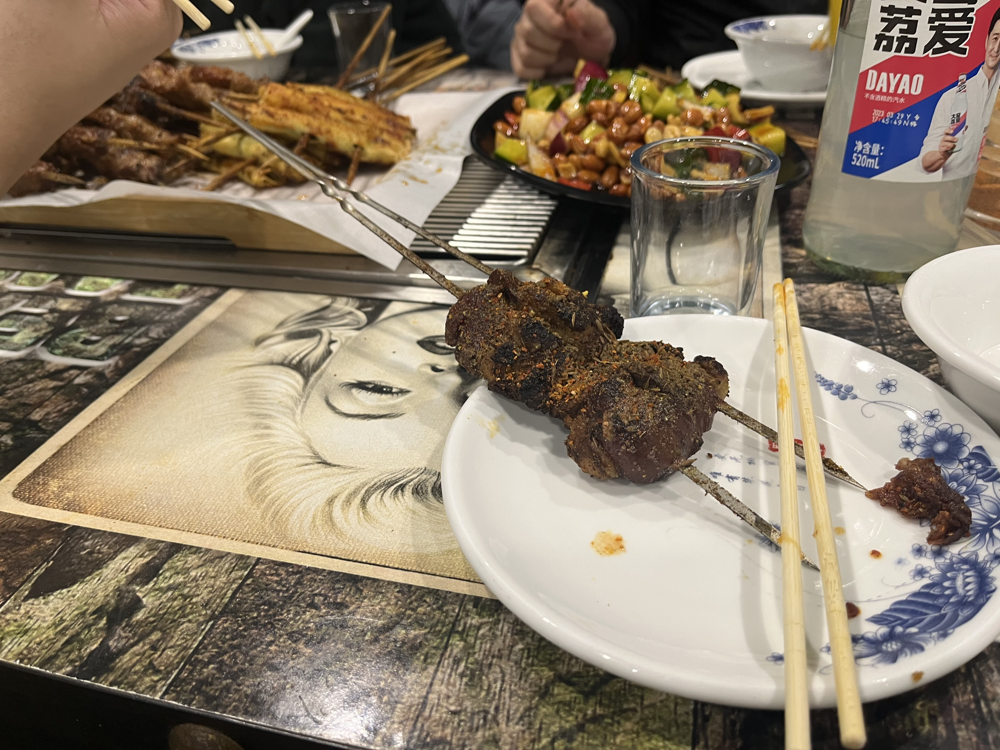
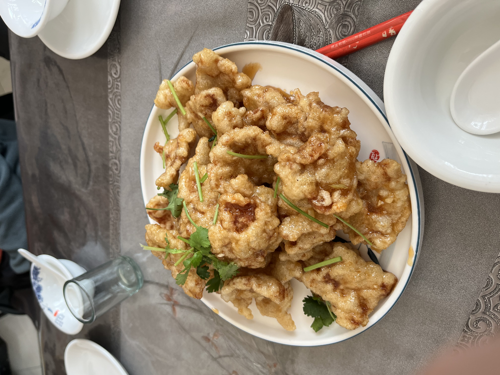
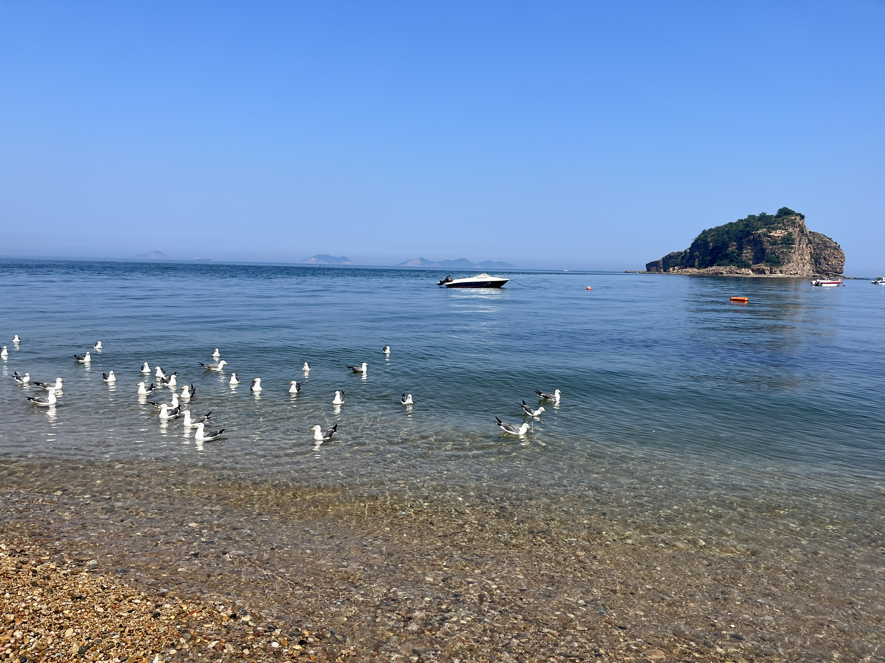
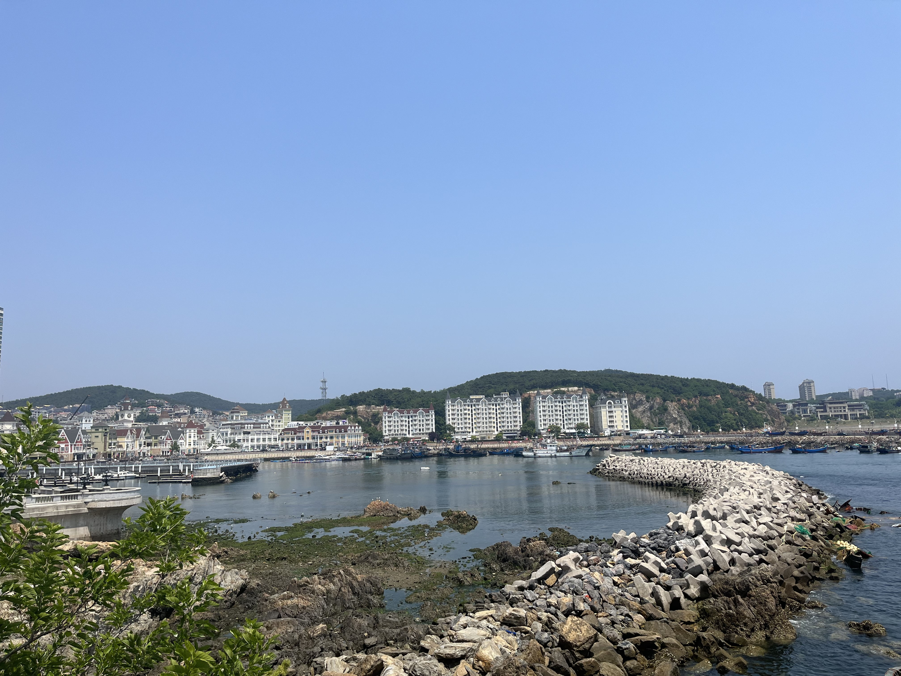
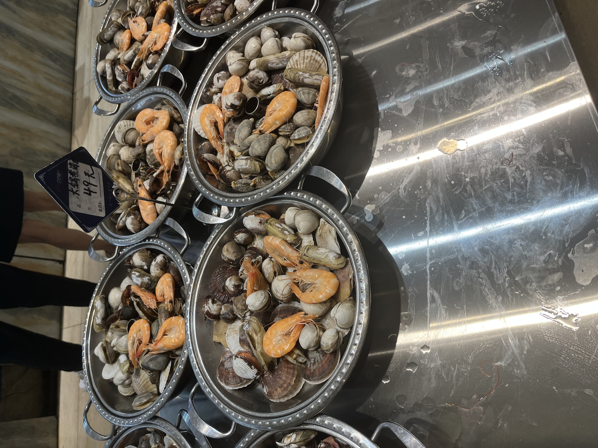

2023回忆
2023的开始紧随着考研的结束，在经历了几天的狂欢后，我也开始思考我这次的考研能否上岸的问题。说实话我是非常不安的，尤其是11月、12月的大环境改变让我倍受影响，可以说考前一个月我就没怎么复习过，我的室友也放弃考研转向选调。出了考场后觉得数学和专业课考的都一般，最后成绩出来也验证了我的担忧，但我还抱有复试线别涨的就能进复试的想法，一边准备我的复试，一边考驾照，同时也投了几家银行的科技岗应付我妈的催促。
于是年后我多线程工作，考驾照、准备复试、准备面试，同时觉得闷的时候就玩玩怪猎，骑车在三明到处溜溜，在外边加加餐。

</figure align=”center”>
复试线出来差两名进复试，就开始找调剂。当时调剂一共投了厦大信息学院，国科大，上科大计算所联培。上科大石沉大海，连调剂复试都没机会。国科大由于今年是第一年校内调剂，首先我问了计算所和信工所，明确得到回复不收所外调剂。看着他们的分数线要说我没有后悔过那肯定是假的，最开始报软件所是为了去并行实验室(结果23年不招考研)，后来也尝试与信工所二室的曹亚男老师(现在NLP课的老师，世界确实很小)联系，在通过几封邮件后，了解到信工所不收所外调剂的政策便与老师断了联系。
厦大那边我是广撒网，甚至连MAC实验室的苏劲松老师我都发邮件了，多少有点神志不清了。最终得到了信息学院几个老师的回复。同样我也对那几个老师做了调查，发现那些个老师的口碑确实一般，联想到网络上的看法，我还是留了一个心眼，但首要还是保证自己有书读。
国科大这里调剂系统一开，我就报名了计算机学院的学硕与专硕。同时听一位好心人的建议马上邮件联系了我现在的导师，得到了还有名额的回复。在国科大调剂系统的deadline后，我陆续接到了6个老师的电话。我印象很深，第一位打电话的女老师询问有没有老师已经联系我的，我说没有，我自己联系了导师，然后她马上把电话挂了(流汗)。有像万方老师和张新峰老师那样诚恳让我考虑他们组的。也有上来啥也不说攻击性拉满查我户口，并得知我已经联系老师试图劝退的。
在礼貌回复上述老师后，本着契约精神，我还是把重心放在我联系的导师上，如果被拒了，那我就把重心转移到万老师和张老师上。最终我接到了一通面试电话，在忐忑的心情下完成了内容比较轻松的面试。最终在回学校的飞机上接到了导师的电话，得到了优先考虑我的答复。在复试中胡乱回答一通，结束后立马接到了录取通知的电话，一块石头算是落地了。
一个小插曲是我在接到录取通知的电话后，紧接着就接到了厦大老师的电话，表达了想要收我的意愿。但看厦大调剂复试的通知就觉得我不太可能突围，想必是高分落榜生诸神黄昏。事后来看确实是这样，强com+高初试占比+校外调剂妥妥的诸神黄昏。
至此我的考研正式结束。比较出糗的是导师让我完成trec的比赛锻炼锻炼，结果我半天没入门啥也不懂，最终这个工作由师姐完成了，心里还是挺过意不去的。
在确定录取后，被同学拉去健身，从此一发不可收拾，在赶毕设的那段时间，基本除了打游戏吃饭睡觉赶毕业，就是去健身。同时天天和斜对门的去造烧烤炒菜，😭我想锅包肉了。可以说，4月到毕业季应该是我大学四年最惬意的时光。


在毕业典礼前几天好好的逛了大连。棒棰岛(大连最佳)、星海广场(大连第二好)、星海浴场、夏家河子、老虎滩(最狗屎的地方)、渔人码头、森林野生动物园、傅家庄。再加上这四年我去过的旅顺、东港、金石滩。我想大连我没去过的地方应该很少了。不得不说我还是很喜欢大连这个城市的。从2019年到大连惊讶于大连的整洁干净，到我还算开心的本科四年(除了千杀的疫情)。这期间认识了很多有能力，相处起来很舒服的人，两任室友也都很好，击败了95%的大学生。在毕业前的几天胡吃海喝再一次见识到了大连物价(但本地人觉得很贵)。大连会是一个我时常怀念的城市，如今在北京我就一直怀念大连的好。

转眼间又到了9月份的开学季，又回到了我熟悉的学生身份。开学典礼，回所，都是再熟悉不过的流程，回来的还有焦虑。这荒郊野岭的地方啥都好，除了买东西不方便，没外卖。日子就这样一天天过去，实话说挺枯燥的。我的睡眠也开始不规律，往往是凌晨两三点睡，十点，甚至中午才醒，然后一天也不懂忙了个啥又到了深夜，这样的日子现在还在持续。现在就是挺后悔多选了4学分，现在复习压力有点大。每天都看看论文，想着至少补全大模型时代后的重要论文，前两个月忽略了代码问题，现在看一些论文的源码总是看不明白，在此基础上做点修改与适配也是举步维艰，这大概是我近些时日最苦恼的日子。
随之而来的还有消失的社交。可以说我读研这几个月，除了同个实验室的，多余的人基本没认识。之前本科的时候我自认为我的社交能力还算不错，玩得来的同学不说数不胜数，但也不算少了。如今读研后除了实验室里的，新认识的人一只巴掌都数的过来。欣慰的是本科阶段的不少同学现在还在经常联系。
焦虑也时常困扰与激励我。从我回所的第一天，感觉全实验室最菜的就是我了，一张白纸啥也不会，让我又回忆起了几个月前面对trec的手足无措，能够在科研上独当一面将会我研究生生涯追寻的目标吧。

收获
细数今年的收获，要说能列成清单的，大致有
- 上岸，虽然不是一志愿上岸，但已经很好了，我对去向还是非常满意的，导师人也很好，包容我的菜😭。
- 考完驾照，驾照是两年前报名的，一直拖到今年暑假可算拿到驾照了，想想考驾照的那几个月我就犯恶心，可算是结束折磨了。
- 顺利毕业，能把这个列进来可想而知我今年实在是没什么收获。
遗憾
对比收获，遗憾可就太多了。
- 初试成绩差，直接导致一志愿未没上岸。
- 科目二第一次紧张给我弄挂了。
- TREC比赛自己啥也不会，带我的博士承担了一切，很惭愧。
- 没有独立科研能力，还没走上科研的正轨，十分焦虑自己的未来。
- 代码能力下降，希望明年解决。
- 减肥失败，现在依然73kg。
- 肌肉维度没变化。
展望
我希望2024年，
- 手握一篇一作顶会。
- 能去工业界的research岗实习一段。
- 强化我的工程能力。
- 体重65kg以下的同时体脂率15%，臂围35。
- 1rm：卧推100kg，硬拉130kg，膝盖有问题不练深蹲，但腿还是得练的。
- 能在城市路段熟练开车。
- 家人健康。
- 有机会回大连看看，也看看还在理工的同学。
- 本命年狗运好点，别和2023年一样霉。
- 中20亿彩票。